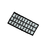
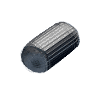

Er soll das im Weltraum verlorene Objekt

einsammeln.Er soll die im Weltraum verlorenen Objekte und

einsammeln.
Er soll die im Weltraum verlorenen Objekte und einsammeln. Dabei darf der Roboter nicht gegen Asteroiden  fahren.
fahren.
hebeObjektAuf() um das Objekt einzusammeln.